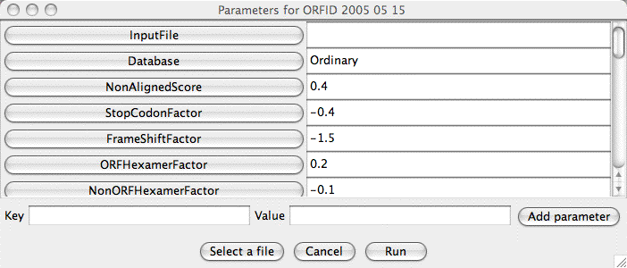

|
|
RetroTector
|
ExecutorsExecutors are modules that actually do something. A selection of them are defined through classes (package builtins) in RetroTector.jar, others may be as .class files in the plugins directory. In general, the performance of an Executor will depend on a number of named parameters, which are typically read from a parameter file, usually the executor script that started it. Singleparameters will as a rule have default values, while multiparameters (which really define data rather than parameters) do not. The default values may be changed at startup as specified in Configuration.txt . If the Executor is not started from a script, but interactively, there will be an opportunity to change parameter values (see below). Executors may be activated in several ways:
 The most notable feature is the (possibly scrolled) list of named parameters and their current values, which may be edited at this stage. You may want a look at this window just to get this list of parameters, in which case you may have use for the 'Cancel' button. By entering text in the 'Key' and 'Value' fields and then clicking the 'Add parameter' button, you may extend the list, but with most Executors this is not meaningful. If you want a file name as the value for some parameter, click in the value field in question and then use the 'Select a file' button. The name of the file you select should appear in the field, though this does not work in all implementations. Clicking the 'Run' button will start the Executor with
the
parameters at present in the window. However, often there is a
parameter specifying an input file to get more information from.
Parameter values given by this file will override those in the window! There may another field below the buttons for specific
purposes. At present, this is implemented only in CollectGenome and ModifierCurve. At startup, all the classes in 'plugins' are absorbed into RetroTector. It is therefore possible to write your own Executor classes and drop them into the plugins directory. See Programming on your own . The Executors at present included in RetroTector.jar are:
|
|
© 2002-2006 UPPSALA UNIVERSITET, Box 256, 751 05 Uppsala Responsible for this page: Göran Sperber. Dept. of Neuroscience, Unit of Physiology Goran.Sperber@neuro.uu.se Last updated: 2006-10-16 |